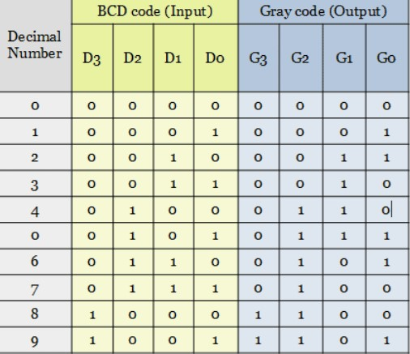
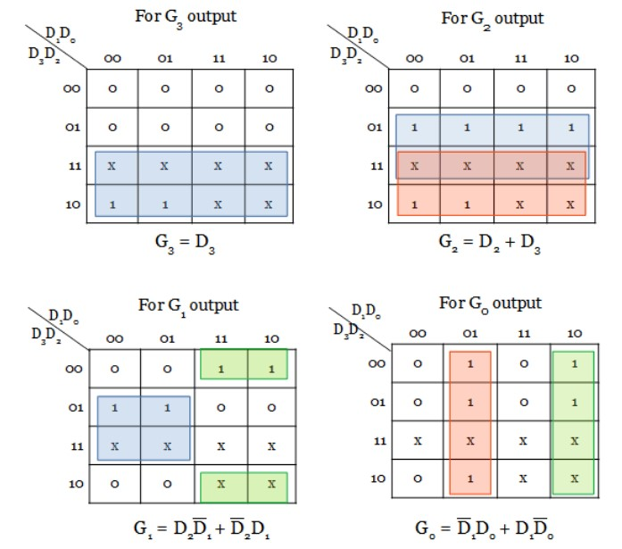
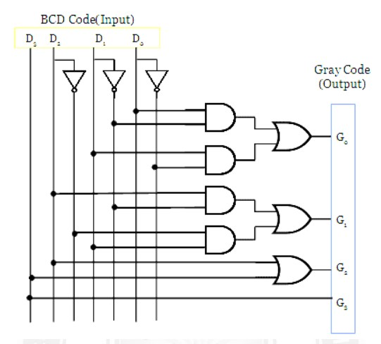

BCD To Gray Code Convertor
The truth table having the conversion from BCD code to gray code is shown below. Since the BCD code has only 4 bits, a total of 9 BCD digits have been considered. The output is unpredictable for other input combinations. From the minterms of each output G3, G2, G1 and G0, the karnaugh map is implemented to simplify the function. The code converter circuit for BCD to gray code is drawn as below from the obtained expression.
The converter has 4 outputs G0, G1, G2 and G3. From the truth table, the minterms can be obtained for each output.
Minterms:
G0 = ∑m(1, 2, 5, 6, 9)
G1 = ∑m(2, 3, 4, 5)
G2 = ∑m(4, 5, 6, 7, 8, 9)
D3 = ∑m(8, 9)
Truth Table:
K-Map:
Logic Diagram:
